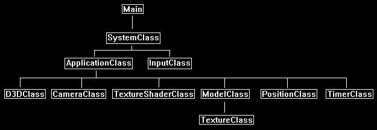
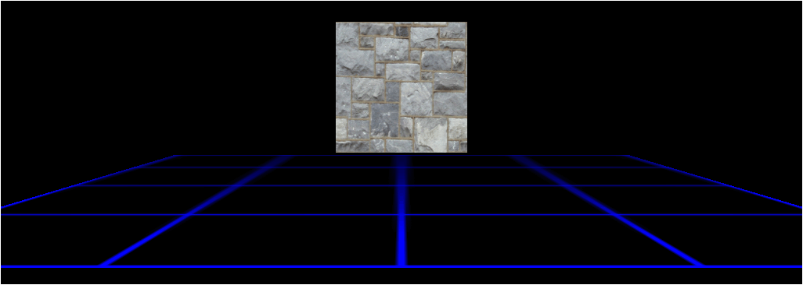

Billboarding in DirectX 11 is the process of using a single textured quad to represent 3D geometry at generally far distances.
This is done for performance gain and sometimes out of necessity to represent a fairly complex scene that could normally not be rendered due to the high polygon requirements.
To illustrate the use of billboarding take for example the scene of a forest with thousands of trees in it.
To render in real time a complex forest with high polygon trees is generally beyond the capabilities of most video cards.
So, what is done instead is the 50 or so closest trees will be rendered normally and then the remainder of trees are rendered as billboards.
This allows the scene polygon count to remain low while still rendering in real time the entire forest.
Now as the user moves through the forest and moves past the 50 closest trees then the next 50 trees will do a gradual blend between the billboard and the actual full polygon tree model.
This way the closest trees are always high detailed models and the distant trees are always low polygon billboards.
The blend process between the model and the billboard quad helps eliminate the pop that would otherwise occur.
This process can be used for many other objects such as buildings, clouds, mountains, structures, planetary bodies, particles, and so forth.
Now what differentiates the different billboarding techniques is how the textured quad is rotated.
Sometimes the quad is rotated in accordance with the user's view, most particle systems use this.
Other times it is rotated to always face the screen in a 2D manner such as 3D text.
However, in this tutorial we are going to cover a third method which instead keeps the quad rotated to always face the user based upon the user's position in the world.
This is the method you would use for the tree example.
Framework
The framework for this tutorial does not introduce any new classes.
Most of the billboarding work will be done in the ApplicationClass.

Positionclass.h
For this tutorial we will re-use the PositionClass from the frustum culling tutorial.
However, we will modify the left and right turn functions to be left and right movement instead.
////////////////////////////////////////////////////////////////////////////////
// Filename: positionclass.h
////////////////////////////////////////////////////////////////////////////////
#ifndef _POSITIONCLASS_H_
#define _POSITIONCLASS_H_
//////////////
// INCLUDES //
//////////////
#include <math.h>
////////////////////////////////////////////////////////////////////////////////
// Class name: PositionClass
////////////////////////////////////////////////////////////////////////////////
class PositionClass
{
public:
PositionClass();
PositionClass(const PositionClass&);
~PositionClass();
void SetPosition(float, float, float);
void SetRotation(float, float, float);
void GetPosition(float&, float&, float&);
void GetRotation(float&, float&, float&);
void SetFrameTime(float);
void MoveLeft(bool);
void MoveRight(bool);
private:
float m_positionX, m_positionY, m_positionZ;
float m_rotationX, m_rotationY, m_rotationZ;
float m_frameTime;
float m_leftSpeed, m_rightSpeed;
};
#endif
Positionclass.cpp
////////////////////////////////////////////////////////////////////////////////
// Filename: positionclass.cpp
////////////////////////////////////////////////////////////////////////////////
#include "positionclass.h"
PositionClass::PositionClass()
{
m_positionX = 0.0f;
m_positionY = 0.0f;
m_positionZ = 0.0f;
m_rotationX = 0.0f;
m_rotationY = 0.0f;
m_rotationZ = 0.0f;
m_frameTime = 0.0f;
m_leftSpeed = 0.0f;
m_rightSpeed = 0.0f;
}
PositionClass::PositionClass(const PositionClass& other)
{
}
PositionClass::~PositionClass()
{
}
void PositionClass::SetPosition(float x, float y, float z)
{
m_positionX = x;
m_positionY = y;
m_positionZ = z;
return;
}
void PositionClass::SetRotation(float x, float y, float z)
{
m_rotationX = x;
m_rotationY = y;
m_rotationZ = z;
return;
}
void PositionClass::GetPosition(float& x, float& y, float& z)
{
x = m_positionX;
y = m_positionY;
z = m_positionZ;
return;
}
void PositionClass::GetRotation(float& x, float& y, float& z)
{
x = m_rotationX;
y = m_rotationY;
z = m_rotationZ;
return;
}
void PositionClass::SetFrameTime(float time)
{
m_frameTime = time;
return;
}
We add two new functions for moving (or strafing) left and right.
void PositionClass::MoveLeft(bool keydown)
{
float radians;
// Update the forward speed movement based on the frame time and whether the user is holding the key down or not.
if(keydown)
{
m_leftSpeed += m_frameTime * 0.25f;
if(m_leftSpeed > (m_frameTime * 50.0f))
{
m_leftSpeed = m_frameTime * 50.0f;
}
}
else
{
m_leftSpeed -= m_frameTime * 0.25f;
if(m_leftSpeed < 0.0f)
{
m_leftSpeed = 0.0f;
}
}
// Convert degrees to radians.
radians = m_rotationY * 0.0174532925f;
// Update the position.
m_positionX -= cosf(radians) * m_leftSpeed;
m_positionZ -= sinf(radians) * m_leftSpeed;
return;
}
void PositionClass::MoveRight(bool keydown)
{
float radians;
// Update the backward speed movement based on the frame time and whether the user is holding the key down or not.
if(keydown)
{
m_rightSpeed += m_frameTime * 0.25f;
if(m_rightSpeed > (m_frameTime * 50.0f))
{
m_rightSpeed = m_frameTime * 50.0f;
}
}
else
{
m_rightSpeed -= m_frameTime * 0.25f;
if(m_rightSpeed < 0.0f)
{
m_rightSpeed = 0.0f;
}
}
// Convert degrees to radians.
radians = m_rotationY * 0.0174532925f;
// Update the position.
m_positionX += cosf(radians) * m_rightSpeed;
m_positionZ += sinf(radians) * m_rightSpeed;
return;
}
Applicationclass.h
////////////////////////////////////////////////////////////////////////////////
// Filename: applicationclass.h
////////////////////////////////////////////////////////////////////////////////
#ifndef _APPLICATIONCLASS_H_
#define _APPLICATIONCLASS_H_
///////////////////////
// MY CLASS INCLUDES //
///////////////////////
#include "d3dclass.h"
#include "inputclass.h"
#include "cameraclass.h"
#include "modelclass.h"
#include "textureshaderclass.h"
We include the PositionClass and TimerClass headers to assist in movement for this tutorial.
#include "positionclass.h"
#include "timerclass.h"
/////////////
// GLOBALS //
/////////////
const bool FULL_SCREEN = false;
const bool VSYNC_ENABLED = true;
const float SCREEN_DEPTH = 1000.0f;
const float SCREEN_NEAR = 0.3f;
////////////////////////////////////////////////////////////////////////////////
// Class name: ApplicationClass
////////////////////////////////////////////////////////////////////////////////
class ApplicationClass
{
public:
ApplicationClass();
ApplicationClass(const ApplicationClass&);
~ApplicationClass();
bool Initialize(int, int, HWND);
void Shutdown();
bool Frame(InputClass*);
private:
bool Render();
private:
D3DClass* m_Direct3D;
CameraClass* m_Camera;
TextureShaderClass* m_TextureShader;
This tutorial will use two models.
The first model is the model of a flat grid on a floor, this is to provide perspective when the user moves left or right.
The second model is a quad made out of two triangles with a texture on it, this will be the billboard model that will be rotated to always face the user.
ModelClass *m_FloorModel, *m_BillboardModel;
We will also use a PositionClass object and a TimerClass object.
PositionClass* m_Position;
TimerClass* m_Timer;
};
#endif
Applicationclass.cpp
////////////////////////////////////////////////////////////////////////////////
// Filename: applicationclass.cpp
////////////////////////////////////////////////////////////////////////////////
#include "applicationclass.h"
Initialize the new objects in the class constructor.
ApplicationClass::ApplicationClass()
{
m_Direct3D = 0;
m_Camera = 0;
m_TextureShader = 0;
m_FloorModel = 0;
m_BillboardModel = 0;
m_Position = 0;
m_Timer = 0;
}
ApplicationClass::ApplicationClass(const ApplicationClass& other)
{
}
ApplicationClass::~ApplicationClass()
{
}
bool ApplicationClass::Initialize(int screenWidth, int screenHeight, HWND hwnd)
{
char modelFilename[128], textureFilename[128];
bool result;
// Create and initialize the Direct3D object.
m_Direct3D = new D3DClass;
result = m_Direct3D->Initialize(screenWidth, screenHeight, VSYNC_ENABLED, hwnd, FULL_SCREEN, SCREEN_DEPTH, SCREEN_NEAR);
if(!result)
{
MessageBox(hwnd, L"Could not initialize Direct3D.", L"Error", MB_OK);
return false;
}
// Create and initialize the camera object.
m_Camera = new CameraClass;
m_Camera->SetPosition(0.0f, 0.0f, -5.0f);
m_Camera->Render();
// Create and initialize the texture shader object.
m_TextureShader = new TextureShaderClass;
result = m_TextureShader->Initialize(m_Direct3D->GetDevice(), hwnd);
if(!result)
{
MessageBox(hwnd, L"Could not initialize the texture shader object.", L"Error", MB_OK);
return false;
}
Initialize the floor model first.
// Set the filenames for the floor model object.
strcpy_s(modelFilename, "../Engine/data/floor.txt");
strcpy_s(textureFilename, "../Engine/data/grid01.tga");
// Create and initialize the floor model object.
m_FloorModel = new ModelClass;
result = m_FloorModel ->Initialize(m_Direct3D->GetDevice(), m_Direct3D->GetDeviceContext(), modelFilename, textureFilename);
if(!result)
{
MessageBox(hwnd, L"Could not initialize the floor model object.", L"Error", MB_OK);
return false;
}
Initialize the billboard model next.
// Set the filenames for the billboard model object.
strcpy_s(modelFilename, "../Engine/data/square.txt");
strcpy_s(textureFilename, "../Engine/data/stone01.tga");
// Create and initialize the billboard model object.
m_BillboardModel = new ModelClass;
result = m_BillboardModel->Initialize(m_Direct3D->GetDevice(), m_Direct3D->GetDeviceContext(), modelFilename, textureFilename);
if(!result)
{
MessageBox(hwnd, L"Could not initialize the billboard model object.", L"Error", MB_OK);
return false;
}
Setup the position and timer objects.
// Create the position object and set the initial viewing position.
m_Position = new PositionClass;
m_Position->SetPosition(0.0f, 1.5f, -11.0f);
// Create and initialize the timer object.
m_Timer = new TimerClass;
m_Timer->Initialize();
return true;
}
Release the new objects in the Shutdown function.
void ApplicationClass::Shutdown()
{
// Release the timer object.
if(m_Timer)
{
delete m_Timer;
m_Timer = 0;
}
// Release the position object.
if(m_Position)
{
delete m_Position;
m_Position = 0;
}
// Release the billboard model object.
if(m_BillboardModel)
{
m_BillboardModel->Shutdown();
delete m_BillboardModel;
m_BillboardModel = 0;
}
// Release the floor model object.
if(m_FloorModel)
{
m_FloorModel->Shutdown();
delete m_FloorModel;
m_FloorModel = 0;
}
// Release the texture shader object.
if(m_TextureShader)
{
m_TextureShader->Shutdown();
delete m_TextureShader;
m_TextureShader = 0;
}
// Release the camera object.
if(m_Camera)
{
delete m_Camera;
m_Camera = 0;
}
// Release the Direct3D object.
if(m_Direct3D)
{
m_Direct3D->Shutdown();
delete m_Direct3D;
m_Direct3D = 0;
}
return;
}
bool ApplicationClass::Frame(InputClass* Input)
{
float positionX, positionY, positionZ;
bool result, keyDown;
// Update the system stats.
m_Timer->Frame();
// Check if the user pressed escape and wants to exit the application.
if(Input->IsEscapePressed())
{
return false;
}
// Set the frame time for calculating the updated position.
m_Position->SetFrameTime(m_Timer->GetTime());
The user will be using the left and right arrow keys to move the camera.
And so, we set the position of the camera using the updated 3D position from the PositionClass object.
// Check if the user is pressing the left or right arrow keys and update the position object accordingly.
keyDown = Input->IsLeftArrowPressed();
m_Position->MoveLeft(keyDown);
keyDown = Input->IsRightArrowPressed();
m_Position->MoveRight(keyDown);
// Get the current view point position
m_Position->GetPosition(positionX, positionY, positionZ);
// Set the position of the camera.
m_Camera->SetPosition(positionX, positionY, positionZ);
m_Camera->Render();
// Render the graphics scene.
result = Render();
if(!result)
{
return false;
}
return true;
}
bool ApplicationClass::Render()
{
XMMATRIX worldMatrix, viewMatrix, projectionMatrix, translateMatrix;
XMFLOAT3 cameraPosition, modelPosition;
double angle;
float pi, rotation;
bool result;
// Clear the buffers to begin the scene.
m_Direct3D->BeginScene(0.0f, 0.0f, 0.0f, 1.0f);
// Get the world, view, and projection matrices from the camera and d3d objects.
m_Direct3D->GetWorldMatrix(worldMatrix);
m_Camera->GetViewMatrix(viewMatrix);
m_Direct3D->GetProjectionMatrix(projectionMatrix);
First render the floor model normally.
// Put the floor model vertex and index buffers on the graphics pipeline to prepare them for drawing.
m_FloorModel->Render(m_Direct3D->GetDeviceContext());
result = m_TextureShader->Render(m_Direct3D->GetDeviceContext(), m_FloorModel->GetIndexCount(), worldMatrix, viewMatrix, projectionMatrix, m_FloorModel->GetTexture());
if(!result)
{
return false;
}
Now retrieve the position of the camera and manually set the position of the billboard model in the world.
// Get the position of the camera.
cameraPosition = m_Camera->GetPosition();
// Set the position of the billboard model.
modelPosition.x = 0.0f;
modelPosition.y = 1.5f;
modelPosition.z = 0.0f;
Next determine the rotation for the billboard so it faces the camera based on the camera's position.
// Calculate the rotation angle that needs to be applied to the billboard model to face the current camera position using the arc tangent function.
pi = 3.14159265358979323846f;
angle = atan2(modelPosition.x - cameraPosition.x, modelPosition.y - cameraPosition.z) * (180.0f / pi);
// Convert rotation angle into radians.
rotation = (float)angle * 0.0174532925f;
Use the rotation to first rotate the billboard model accordingly, and then use translate to position the billboard in the world.
// Setup the rotation the billboard at the origin using the world matrix.
worldMatrix = XMMatrixRotationY(rotation);
// Setup the translation matrix from the billboard model.
translateMatrix = XMMatrixTranslation(modelPosition.x, modelPosition.y, modelPosition.z);
// Finally combine the rotation and translation matrices to create the final world matrix for the billboard model.
worldMatrix = XMMatrixMultiply(worldMatrix, translateMatrix);
Now render the billboard model using the updated world matrix that has the object facing the camera at all times.
// Put the floor model vertex and index buffers on the graphics pipeline to prepare them for drawing.
m_BillboardModel->Render(m_Direct3D->GetDeviceContext());
result = m_TextureShader->Render(m_Direct3D->GetDeviceContext(), m_BillboardModel->GetIndexCount(), worldMatrix, viewMatrix, projectionMatrix, m_BillboardModel->GetTexture());
if(!result)
{
return false;
}
// Present the rendered scene to the screen.
m_Direct3D->EndScene();
return true;
}
Summary
As you move left and right the billboard model turns to always face the camera based on the current position of the camera.
Note that there are alternative billboarding techniques to achieve other billboarding effects.

To Do Exercises
1. Recompile and run the program. Use the left and right arrow keys to strafe to either side and the billboard will rotate accordingly.
2. Change the billboard texture to a picture of a tree with alpha blending enabled.
3. Create a small forest using the tree billboards on flat terrain.
4. Create a blend effect to transition between the tree billboard and an actual tree model based on distance of the camera from each tree.
5. Investigate view based billboarding.
Source Code
Source Code and Data Files: dx11win10tut34_src.zip